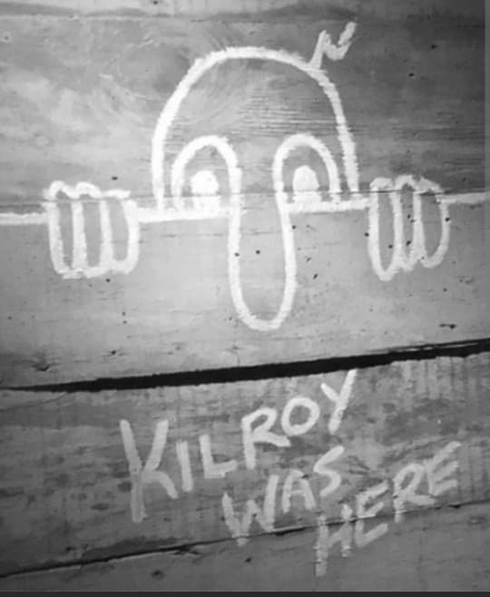

Le graffiti « Kilroy was here », accompagné d’un petit personnage chauve au long nez dépassant d’un mur, est l’un des symboles les plus célèbres de la Seconde Guerre mondiale. On le retrouve sur des murs, des bunkers, des véhicules, des ruines, partout où les soldats américains (GI) sont passés.
Ce dessin simple devient un mème militaire : une façon pour les soldats de dire « nous étions là », avec humour, dans des lieux souvent dangereux ou détruits par la guerre. C’est un symbole de présence, de camaraderie et de survie psychologique.
L’histoire la plus connue relie le nom à James J. Kilroy, inspecteur dans un chantier naval du Massachusetts pendant la Seconde Guerre mondiale. Son travail consistait à vérifier les rivets posés sur les navires en construction.
Pour éviter que des ouvriers ne trichent sur le nombre de rivets, il écrivait sur les zones qu’il avait contrôlées :
« Kilroy was here »
Quand les navires étaient terminés et envoyés au front, les soldats découvraient ce message dans des endroits difficiles d’accès. Ils se demandaient qui était ce mystérieux « Kilroy » qui semblait toujours arriver avant eux. La légende d’un personnage omniprésent était née.
Le petit bonhomme au long nez n’est pas dessiné à l’origine par James Kilroy. Il vient d’un autre graffiti populaire chez les soldats britanniques : « Mr. Chad », un personnage qui regarde par-dessus un mur, souvent accompagné de la phrase « Wot, no ... ? » pour se moquer des pénuries.
Les soldats américains et britanniques finissent par fusionner :
Cette fusion donne naissance au graffiti complet :
Petit bonhomme chauve au long nez + « Kilroy was here »
C’est ce mélange qui devient le symbole mondial que l’on connaît aujourd’hui.
Le graffiti « Kilroy was here » se présente généralement ainsi :
Ce style très simple permet aux soldats de le dessiner rapidement, partout, avec un crayon, un morceau de craie ou de peinture. Il devient un langage visuel partagé entre les GI.
Les GI américains commencent à écrire « Kilroy was here » sur :
On retrouve ce graffiti en Europe, dans le Pacifique, en Afrique du Nord, en Italie, en Allemagne… partout où les forces américaines sont engagées.
Il devient une sorte de jeu : chaque unité veut laisser sa trace, et chaque soldat qui arrive dans un lieu cherche à savoir si « Kilroy » est déjà passé.
Pour les GI, ce graffiti n’est pas un simple dessin. Il représente :
La phrase devient presque un défi : peu importe où l’on arrive, quelqu’un a déjà écrit « Kilroy was here ». C’est une manière de dire que les GI sont partout.
Dans un contexte de guerre, les soldats ont besoin de moyens pour supporter la peur, la fatigue et la violence. Les graffitis comme « Kilroy was here » jouent un rôle important :
Ce petit bonhomme est donc un symbole de résilience : un moyen de rester humain dans un monde dominé par la guerre.
Après 1945, « Kilroy was here » ne disparaît pas. Il reste dans la culture populaire :
Il devient un symbole de la trace laissée par les soldats, de l’humour en temps de guerre, et de la manière dont les hommes essaient de garder une part d’humanité dans des situations extrêmes.
Pour un visiteur du musée, voir « Kilroy was here », c’est comprendre :
Ce n’est pas un slogan officiel, ni une propagande d’État, mais un marqueur spontané de la présence des soldats, devenu un symbole mondial.